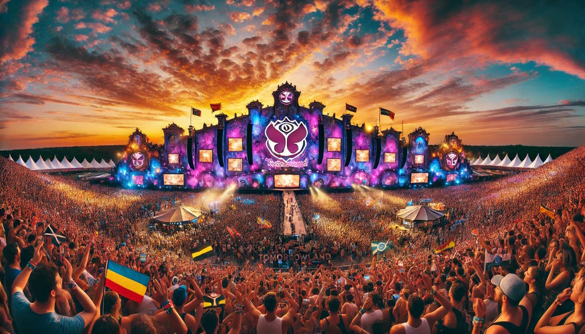
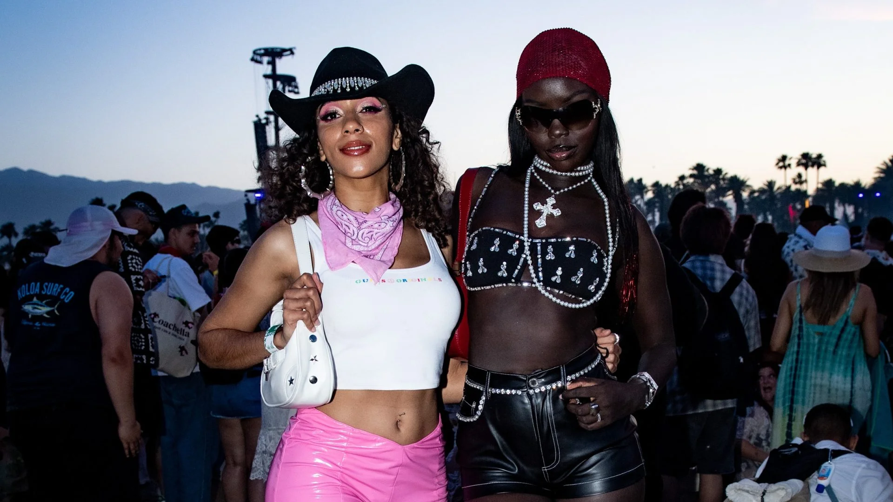
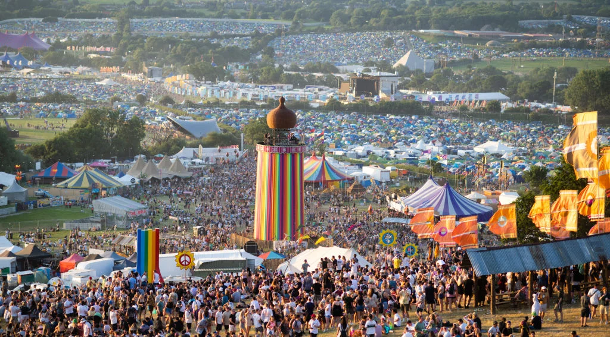
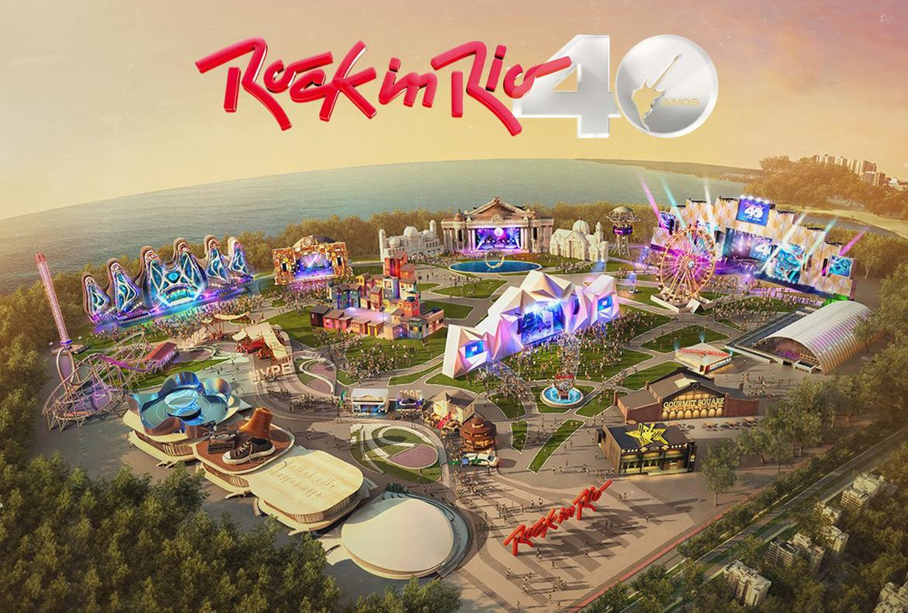

Od klasične do moderne muzike
Muzika ima bogatu istoriju koja seže hiljadama godina unazad. Od klasičnih kompozicija Baha i Mocarta, do moderne elektronike i pop muzike, muzika je kroz vekove evoluirala, oblikujući društva i kulture. Na ovoj stranici ćemo istraživati ključne tačke u istoriji muzike, ključne umetnike, i žanrove koji su oblikovali današnju muzičku scenu.
Vremenska linija evolucije muzike
Pre 5000 godina
Početak muzike sa osnovnim instrumentima poput drvenih flauta i bubnjeva. Muzika je korišćena u religijskim obredima.
1600-1750 - Barok
Razvoj klasične muzike sa kompozitorima poput J.S. Bacha i Antonija Vivaldija.
1800-1900 - Romantizam
Kompozitori poput Ludviga van Beethovena i Pjotra Iljiča Čajkovskog donose emocionalnu dubinu muzici.
1950-1960 - Rock 'n' Roll
Pojava rock muzike sa ikonama poput Elvisa Preslija i Chucka Berry-a. Revolucija u popularnoj muzici.
1980s - Elektronska muzika
Početak popularnosti elektronske muzike sa žanrovima kao što su techno, house i disco.
2000s - Digitalna era
Digitalna produkcija i streaming usluge menjaju način na koji slušamo muziku. Poput Spotify-a i YouTube-a.
Najveći Muzički Festivali
Muzički festivali su postali nezaobilazan deo muzičke kulture. Tokom godina, oni su evoluirali od malih okupljanja do grandioznih događaja koji okupljaju hiljade i hiljade ljudi. Ovi festivali nisu samo prilika za slušanje omiljenih izvođača, već i za upijanje jedinstvene atmosfere i kulturnih izraza. Evo nekoliko najpoznatijih muzičkih festivala:
Tomorrowland
Tomorrowland je jedan od najvećih i najpoznatijih EDM festivala na svetu. Svake godine, u Belgiji, okuplja najbolje DJ-eve i ljubitelje elektronske muzike iz celog sveta.
Coachella
Coachella je jedan od najpoznatijih muzičkih festivala u SAD-u, poznat po eklektičnoj podeli žanrova i vrhunskim izvođačima. Osim što je muzički događaj, Coachella je i modna manifestacija.
Glastonbury
Glastonbury je jedan od najstarijih i najpoznatijih festivala u Velikoj Britaniji. Njegova tradicija počinje još 1970. godine, i od tada je postao simbol britanske muzičke scene.
Rock in Rio
Rock in Rio je jedan od najvećih rock festivala na svetu. Održava se u Rio de Janeiru, ali ima i međunarodnu verziju koja se održava u Madridu i Lisabonu.
Preporučeni muzički žanrovi kroz vekove
- Barokna muzika
- Romantična muzika
- Jazz
- Rock
- EDM
- Hip-hop
- Pop
Preporučena literatura za dalje istraživanje
- The Oxford History of Western Music - Richard Taruskin
- A History of Western Music - J. Peter Burkholder
- The History of Western Music - Craig Wright